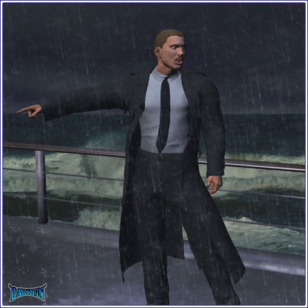
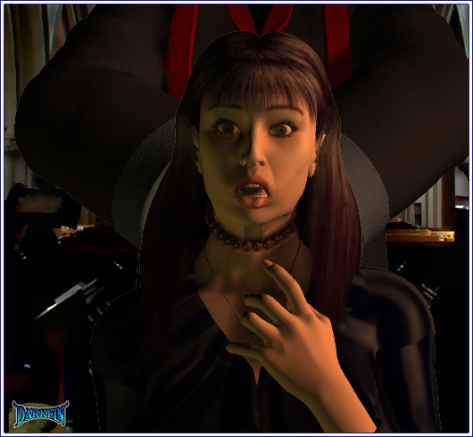
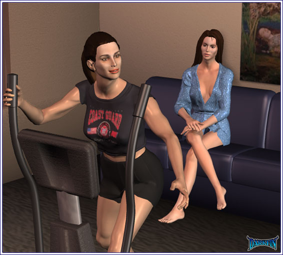

KJ You okay, sis?
Erika Something hit us...
KJ Yeah, a freak storm no one warned us about
Erika No — from underneath
Craig EVERYONE, STAY CALM — PLEASE FOLLOW THE CREW BELOW — THERE'S PLENTY OF ROOM
Ursula Craigie, this is not good — this is worse than any special effect mishap I've been through — please get us out of here
Craig (Trying to remain professional) Help is on the way, Mrs. Martel - please keep cool and remain with the others
Ursula (Stomping off) SCREW YOU

Craig Women and children first — unless you're a girly man
Claudia (To Ben) You and your bright idea of bringing the children to a funeral
Ben But they wanted to come on the ship — and I didn't want to shield them from death
Claudia Well, you're doing a damn good job!
Kayla Mother
Claudia Not now, just keep moving
Kayla But mother...
Claudia For Christ's sake, Kayla, can't you see the trouble we're in?
Kayla Where's Hannah?
Officer (Discreetly) There isn't enough room for everyone below deck — some will have to stay up here
Craig (Wiping the water off of his face) Are you out of your mind? — if those waves get any higher, we're going to be swept away like ants
Officer I'm afraid that's not the worst of it... there's a gash below the bow, we're taking on heavy water
Officer How long before your Coast Guard boys get here?
Craig In these conditions... 15 — 18 minutes tops
Officer (Biting his lip) We're lucky if we have four
Ona Rosa Amen
Ona Rosa (Lighting a candle) Forgive me, Blessed Mother, for this is the only place I feel safe — the only place I can think freely
Ona Rosa I cannot go with this to my family... my husband
Ona Rosa I beg your forgiveness for such dark thoughts and darker actions...
Ona Rosa 'til the hour of our death... amen
Ona Rosa (Turning around) Is someone there?
Ona Rosa Our Father...
Voice Sed libera nos a malo...

Carmen Oh mija, I do not know if you are ready to handle this...
Frank Carmie!
Frank I can smell the tamales down the road, let's eat!
Carmen Shh — nietos!
Hector (Taking off his jacket) The grandkids are here?
Carmen They're taking a nap before dinner
Frank Where's my Rosa?
Carmen At church, she's saying a rosary for KJ's father
Hector That's right — Stephi mentioned the... service was today
Carmen Ay, Stephie? — please, Hector, tell me you are not involved with that bruja again?
Carmen (Following him) Are you?
Frank (Following her) Wait a minute — why wasn't my daughter invited to pay her respects in person? — she's a close colleague of von Meer...
Hector (Opening the refrigerator) Cerveza, Francis?
Frank (Angry) How dare they think Ona Rosa is not good enough to attend their fancy functions!
Hector It's a funeral for crying out loud!
Carmen Both of you, lower your voice
Frank (Opening his beverage) I'm tired of those Beacon Point snobs always looking down their noses at us — who the hell do they think they are?
Hector This valley's gentry... who can and will get away with murder
Frank They're fucking assholes — that's who they are
Hector What... the proper term is what they are — an asshole is technically a what, not a who
Frank Oh, I see, you think if you talk like them they'll let you join their inner circle? — that's bullshit, dear brother-in-law - you will always be a wetback to them, no matter how many times you fuck their women
Carmen (Slamming her hand down on the table) FRANCIS FIORE, THAT IS ENOUGH — I will NOT have this talk in my kitchen, I will NOT have this talk in my house
Frank It's my house too and I can talk any damn way I choose
Hector He's right, sis — if he wants to talk like an ignorant gutter rat, that is his choice — some of us want to better ourselves and he can't deal with it
Frank Better than what? — Javier is so busy trying to be something he's not, he forgets about his own wife and children
Carmen Javier is an important man
Frank Apparently not important enough or his WIFE would be on that SHIP with all the other ice cubes who think they shit gold — or is it what they shit gold?
Frank If anything, those pricks should be spit-shining our shadows — our families have been in this valley for over two-hundred years
Frank Honey, could you bring me the butter? — my great grandfather...
Hector Was an Italian galley cook on a Spanish trading ship — yes, we all know the story
Frank Whatever he did, he did it well — all he had to work with was a tiny plot of land and one olive tree — now look at this place...
Frank Almonds, walnuts, pistachios — when the people of Santa Conchita think of nuts, they think of our family!
Frank I gotta go take a piss
Carmen On your way, please turn the porch light on — Anita is supposed to be dropping by soon
Frank (Calling back) Don't even get me started on that one — KIDS, wake up and go get your dinner!
Carmen You didn't answer me earlier...
Hector There's not much to say
Carmen There is if Stephanie Gates, the ex Mrs. Martel, is back in your life
Hector I'm just helping out a friend, that's all
Carmen Mm-hmm...
Carmen (Holding it up) A true miracle
Hector (Looking away) They hit some turbulence, no big deal
Carmen By the grace of God they survived... but we know better, don't we, Hector?
Hector Listen, before Frank gets back, we need to talk
Carmen Fine, change the subject if you want
Hector We inspected all of the fields today — nearly two-thirds of them are damaged or destroyed
Carmen We've been through bad seasons before
Hector This is more than a season - it will take years, maybe even decades, to get back to our normal harvests
Carmen Ona Rosa gave us the paperwork for a disaster loan
Hector A government band-aid is not going to help a gaping chest wound — your husband refuses to see it, please don't go burying your head in the soot as well
Carmen (Pushing him back) And what exactly do you suggest we do?
Hector Keep the house and a few acres but sell the rest
Carmen Are you loco en la cabeza? — you just said yourself that the fields are damaged
Hector The land still has plenty of value — the demand for condos and houses in this valley continues to skyrocket
Carmen No, no, no — I am not listening to this!
Hector Hermana — look in the mirror — you are no longer a young girl, your husband is half a man and your two daughters are not interested in the farm as a full-time job and life...
Hector (Softly) Just think about what I said
Frank (To the kids) No one touches the tamales until I touch them first!
Carmen ONI
Marcy Don't you have to be at your folks' place?

Anita I keep finding excuses not to go
Anita Yet another one
Marcy Yeah, let's enjoy it while we can — I just spoke to one of the Sig 7 producers, it's not good
Anita (Toweling off) I know — I flew over the cinders of what used to be R'xal's moon palace — not very palatial
Marcy He said we have enough episodes in the can for the next month or two but we'll have to find a new location to shoot the rest of the season — there's talk of Vancouver... even Australia
Anita Cool
Marcy (Hurt) Cool?
Anita Sounds perfect, I'll go with you
Marcy What?
Anita Too many bad things have been going on around here the last few years, it will be a nice change of pace
Marcy But how can you? — your Coast Guard duties...
Anita (Holding up her arm cast) One swift blow against a granite countertop and this becomes a permanent disability — I doubt they'd want me to fly one of their precious birds with one hand
Marcy (Stunned) Why... would you do that?
Anita Let's just say I'm no longer feeling the love for the uniform — they want us to work triple the amount since 9/11 yet do it with half the funds...
Anita And I'm sure as hell not feeling the love for this country — why should I risk my life when I'm despised for who I am? — it was hard enough being pissed on for being the poor Latina farmer's daughter, now I get dumb fucks like Lieutenant Vesner throwing their "moral values" shit in my face on a daily basis, but this cocksucker went through three wives, had two illegitimate kids, snorted blow off the asses of Cambodian whores - YET, YET - he's "better" than I am because he's born again — FUCK THAT — let the chief chimp sacrifice good old V's blood for the land, I am done!
Marcy Babe, calm down
Anita Yeah, calm down, that's what they want us to do, calm down, shut up, get back in the closet, hide behind some prop boyfriend...
Marcy Ouch
Marcy Unfortunately, your side... our side... assumed a bunch of asexual dancing clowns on TV handing out free makeovers and trips or singing happy songs equated acceptance with the mainstream when it was anything but — the one thing I learned in this business is that people will gleefully lick your feet to get the best goodie bag yet will secretly hate you the entire time their tongues are wrapped around your toes
Anita I don't want to live like this anymore
Marcy What about your family?
Anita That's what Thanksgiving is for — besides, my sister can take care of our parents, she's their favorite anyway
Marcy Well, she did give them grandchildren
Anita Shut up
Marcy Aren't you going to get that?
Anita Nah, let them leave a voicemail
Anita SHIT — that's an emergency alert — hello? — yes... WHAT? — WHERE? — I'M ON MY WAY
Marcy What's going on?
Anita Turn on the news!
Dan KCON has just learned that the Meeramar vessel carrying hundreds of mourners for a memorial service is in danger of sinking off the coast of Duquesa Bay, rescue ships have been deployed but the intensity of this storm is making matters extremely difficult...
Anita Craig is on that ship
Craig (Running around) LIFE JACKETS, MAKE SURE EVERYONE IS WEARING THEM
Erika (Gritting her teeth) Are you trying to bait me?
KJ ERIKA, GET AWAY FROM THE RAIL
Claudia & Ben HANNAH